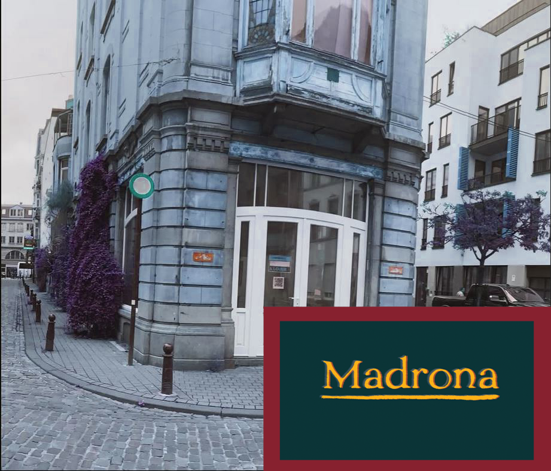
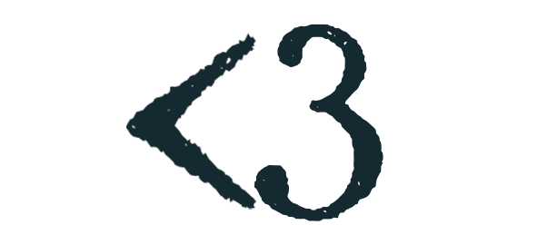
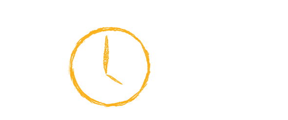
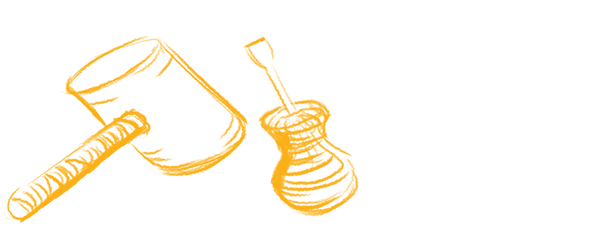
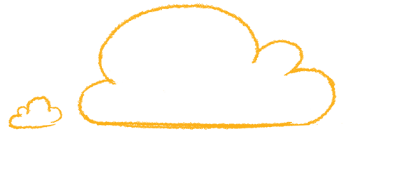

We werken aan het openen van een veilige lesbische en queer ruimte in het centrum van Brussel
Vanaf het begin is ons doel geweest om lesbiennes in Brussel zichtbaarder te maken en ruimte te nemen en te kunnen bestaan. De volgende stap is daarom het openen van een fysieke plek in het centrum van Brussel.
Een plek om te bestaan, te rusten, te lezen, elkaar te ontmoeten en te vieren.
We hebben een ruimte gevonden in het stadscentrum.
Ze zit vol potentieel.
Maar er is echt veel werk nodig.
Om de deuren te openen hebben we financiering nodig.
Niet gewoon een bar. Het is een living voor de community.
Lesbische ruimtes zijn zeldzaam. Madrona is niet zomaar een bar of café. Het is een gemeenschapsplek. Je financiert niet alleen renovaties. Je helpt een plek bouwen die velen van ons al lang missen. We hebben tot juli om €45K op te halen om deze werken te doen en de ruimte operationeel te maken. Zonder die steun kan het project niet vooruit. Help ons dit mogelijk te maken vóór juli 2026! We beloven goeie vibes, goeie boeken en heel gay drankjes.


tijdslimiet
We hebben tot juli 2026 om financiering te verzamelen zodat we met de werken kunnen starten!

nodige werken
Installatie van toiletten / Elektriciteitswerken om de ruimte conform te maken / Internet en basisinfrastructuur / Veiligheids- en conformiteitswerken vereist voor publiek gebruik.

deel en zorg
Doneer als je kan, deel deze inzamelactie en bied praktische hulp, skills of contacten aan als je die hebt.
Help ons!